Horizons
Four directions the core program points toward or draws on: the central brain I started in, the smaller circuits that test the same hypothesis at its limit, the expedition science I run with the Ocean Genome Atlas Project, and public engagement.
Back to the central brain
My dissertation mapped the octopus brain at the level of transcripts: the neuropeptide and transmitter systems of the vertical lobe learning and memory network, six markers of glia-like cells in brain, optic lobe, arm cord, and stellate ganglion, and nitric oxide synthase across the lobes and the peripheral ganglia. Neurons, glia, and nitrergic signaling are one cell ecosystem, and a resilience atlas has to include all of it. The arm has been my focus for the past four years because the peripheral nervous system was unmapped and I had the tools to map it, but the resilience question applies to the brain as directly as to the arm, and the program already collects central brain lobes and optic lobes from the same challenged animals as the arm cords. A stress atlas of the vertical lobe system, with the maps from my doctoral work as the baseline, is the extension I expect to pursue first once the arm work is funded. It also asks the program's structural question from the other side: whether the central brain fails before the semi-autonomous periphery buffers it, or after.
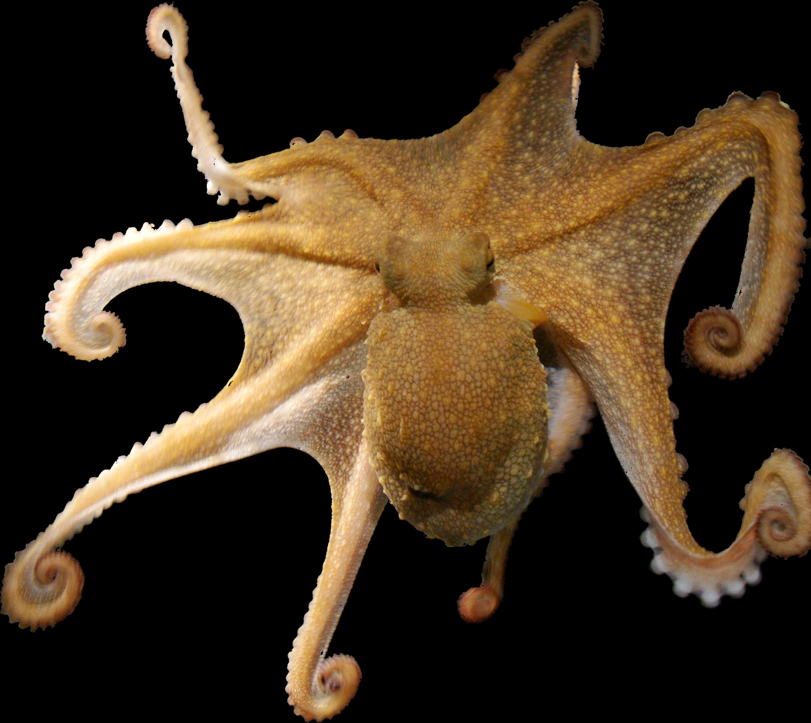
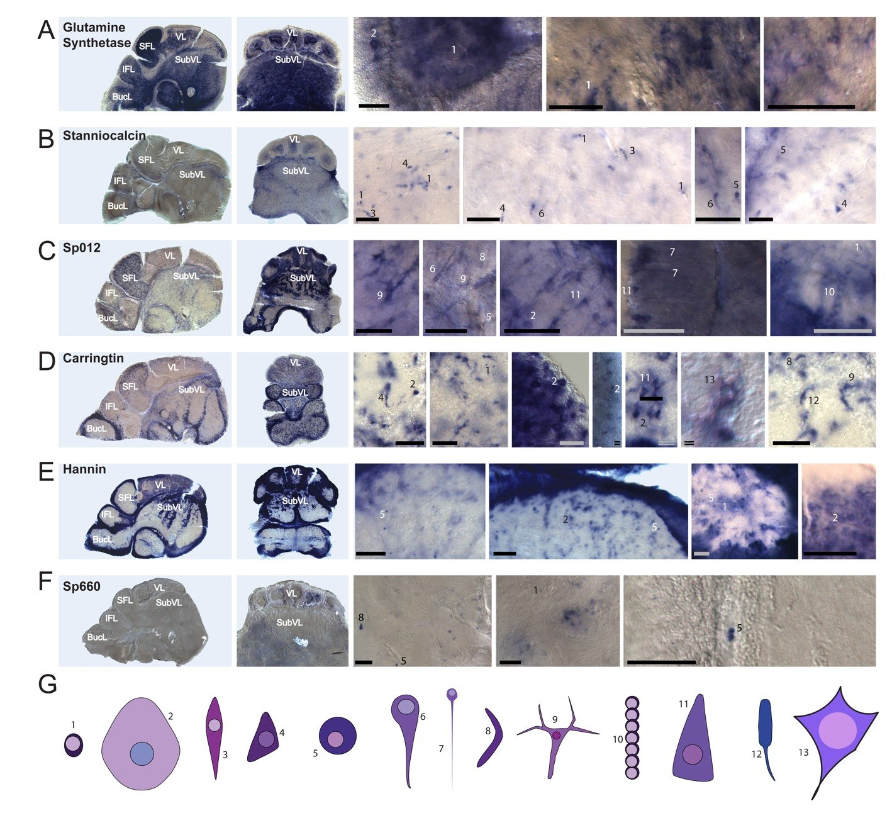
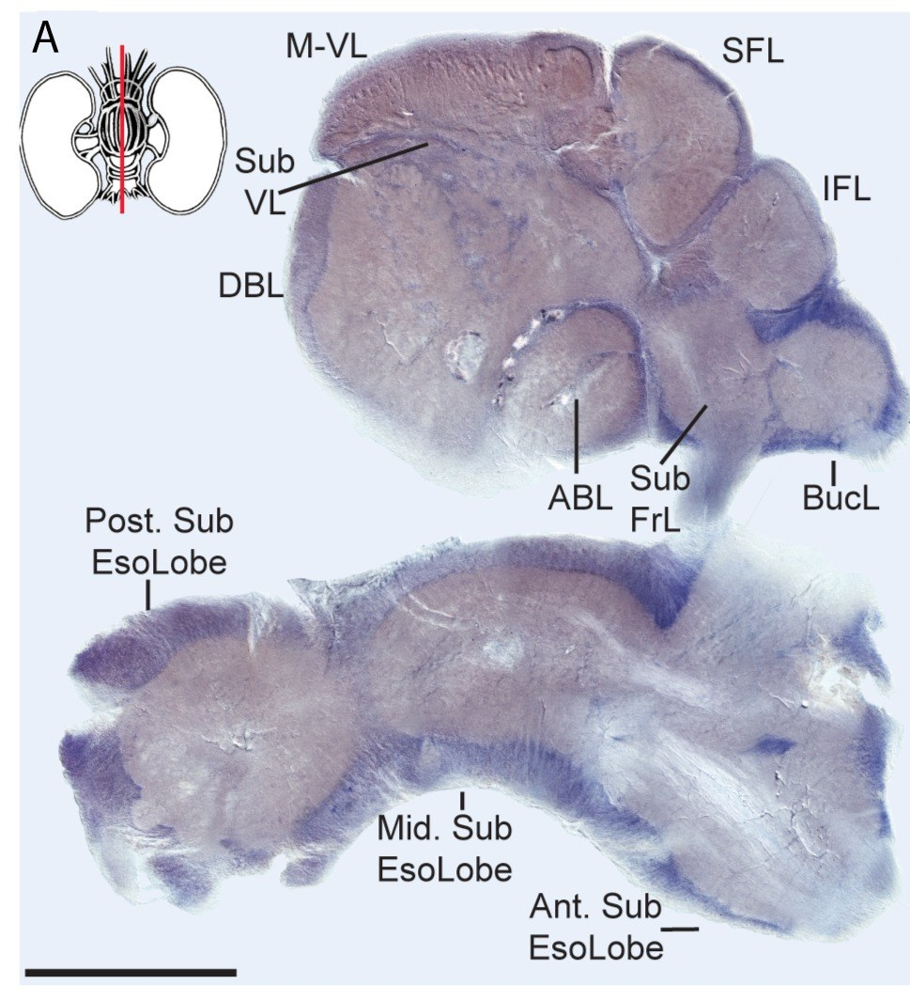
Smaller circuits: the hypothesis predicts its own outgroup
If distributed, redundant organization buffers perturbation, a minimal-redundancy circuit should fail abruptly and at a nameable point. Gastropod molluscs provide that test on the same stressors, readouts, and rig, in nervous systems where individual neurons are identifiable from animal to animal and can be recorded one at a time. I recorded from identified Aplysia neurons and mapped their molecular identities during my Ph.D., so the methods carry over.
Dendronotus iris
Swims on a half-center oscillator of two interneuron pairs, four neurons in total, in which failure under thermal or CO₂ load can be attributed to a single identified cell and separated into loss of intrinsic excitability versus synaptic failure.
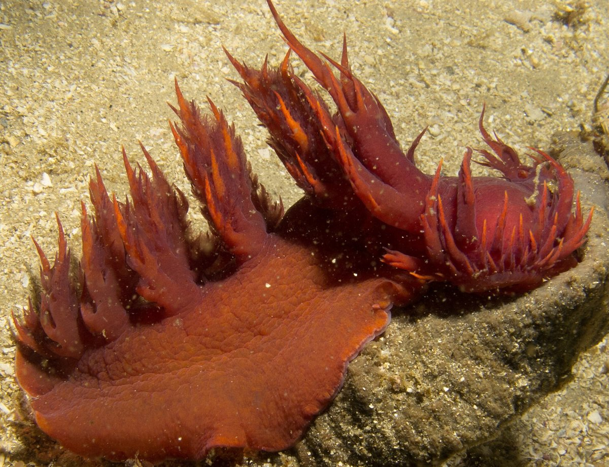
{kind=link}
Melibe leonina
Generates homologous left-right flexion swimming from an eight-neuron circuit built from the same neuron families as Dendronotus, wired differently. One comparison asks whether adding neurons adds resilience: the cephalopod hypothesis at its smallest scale.
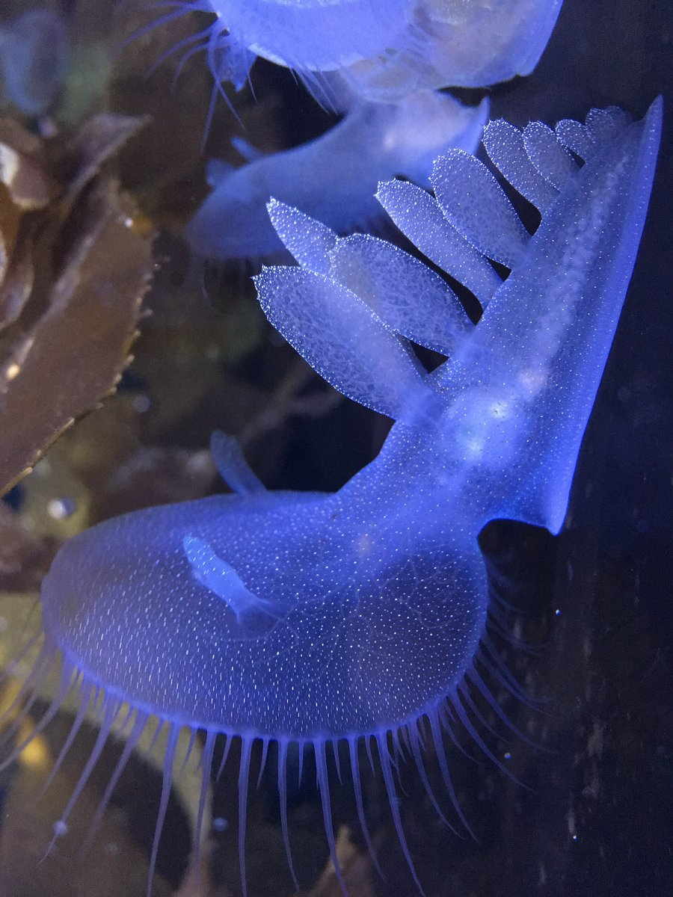
{kind=link}
Aplysia californica
The classical preparation for cellular learning and memory, and the gastropod I have worked in. Its identified neurons are where a stressed neuron's transcriptome can be matched to its physiology one cell at a time.
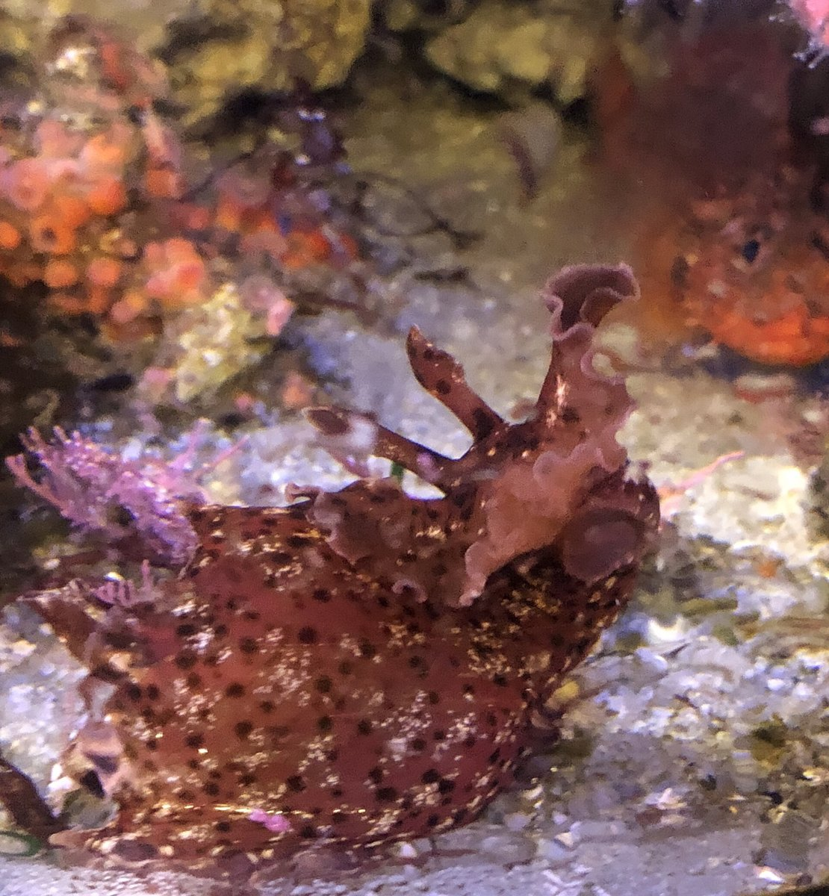
{kind=link}
Lymnaea stagnalis
A three-neuron respiratory central pattern generator, a deep literature on identified neurons and learning, and bench-top culture. A freshwater extension of the same question, in ponds whose temperature and chemistry swing more than any coast, and a course-friendly one.
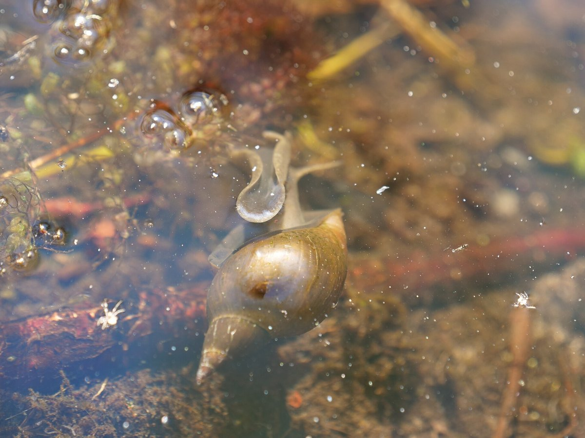
{kind=link}
The crossed design also extends to salinity, which shifts ion transport and synaptic reliability through transporter families the program already tracks; to heritability of resilience through family-structured crosses in E. berryi; and to chromatophore motor circuits, where camouflage precision under warming and acidification is a cephalopod-native readout of circuit health.
Ocean Genome Atlas Project
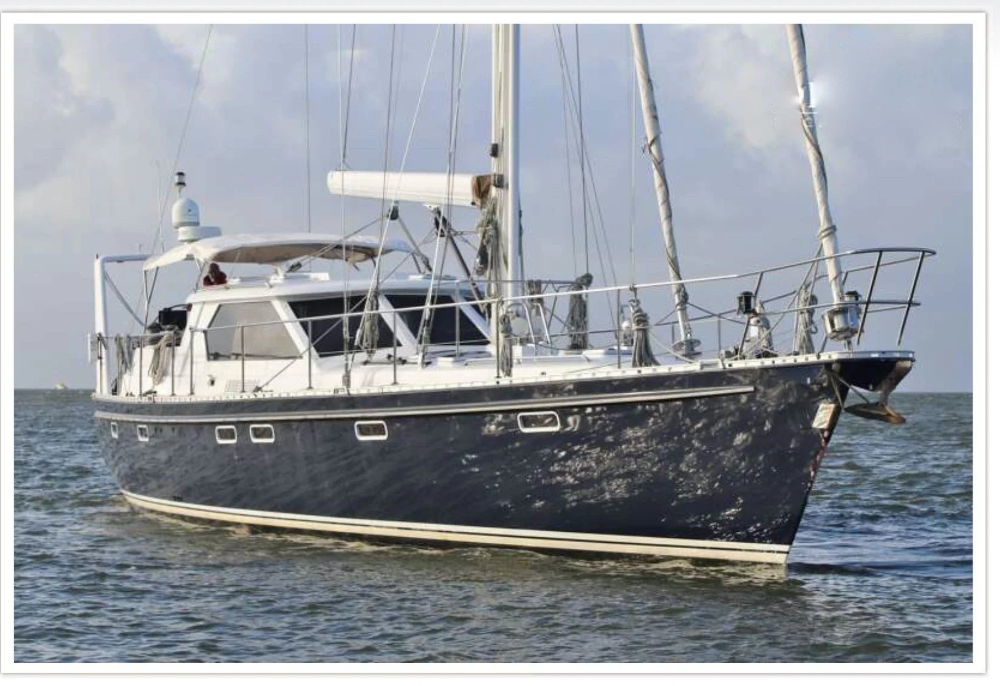
Since 2020 I have been Director of Scientific Operations for the Ocean Genome Atlas Project, a UN Decade of Ocean Science-designated nonprofit whose goal is to collect, classify, sequence, and map genomic information for organisms representing at least 80% of extant marine species, at single-cell resolution. The project runs mobile laboratories aboard a sailing research vessel, which samples at a small fraction of the daily cost of a conventional research ship. I oversee scientific strategy and operations: field-based molecular surveys, protocols for the mobile labs, coordination across international taxonomic teams, grant development, and institutional partnerships.
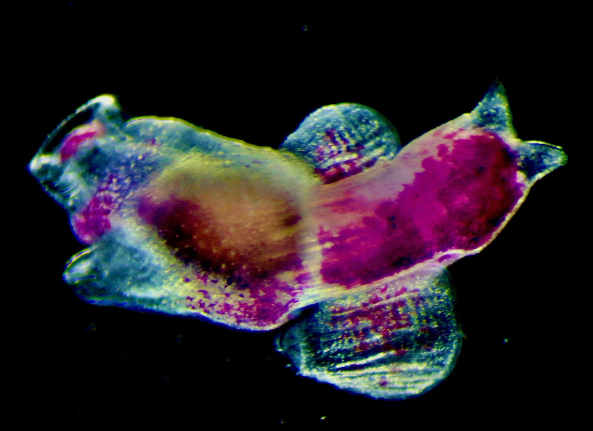
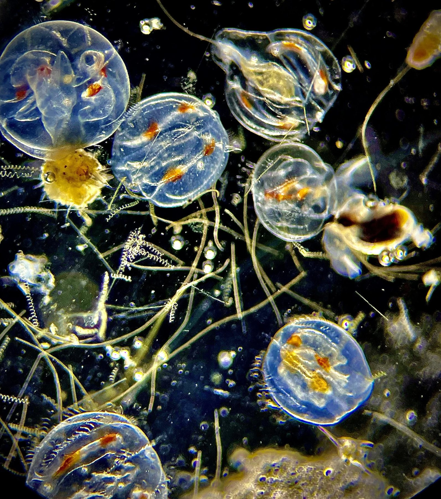
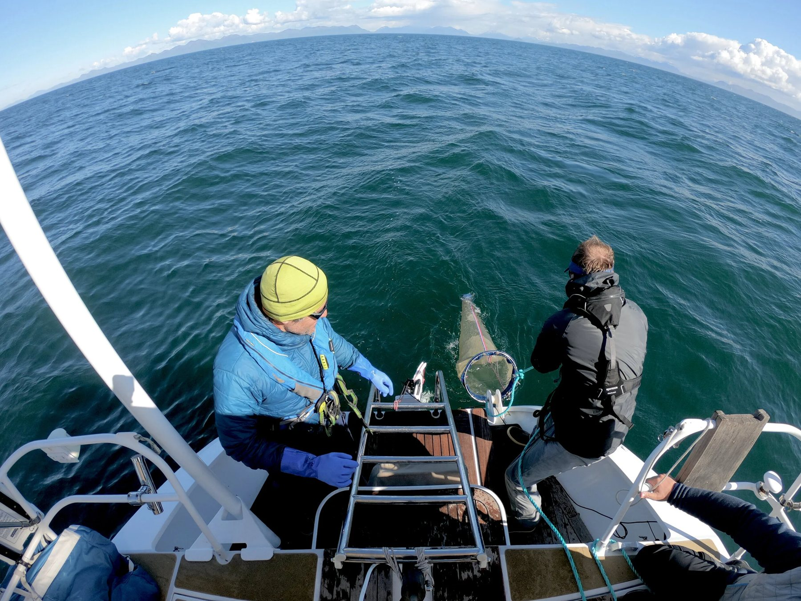
For a lab this is a route into biodiversity genomics that no single campus can offer, and expedition science raises decisions I can teach as decisions: specimen provenance, benefit-sharing obligations for genetic resources collected in other countries' waters, and who is named on the resulting paper.
Public science
I was selected for the Kavli Foundation's Science and Society Sparks Program in public engagement (November to December 2026). During my Ph.D. I developed and taught K-12 and adult-learner outreach curricula in biodiversity, genetics, and marine science across Florida, in a University of Florida collaboration with SeaKeepers, and I have spoken on cephalopod brain evolution at the Monterey Bay Aquarium and at TONMOCON, the cephalopod enthusiasts' conference. A unit on how nervous systems handle environmental change, developed with local school students taking part, is the outreach project I plan to build in my first two years on a faculty.